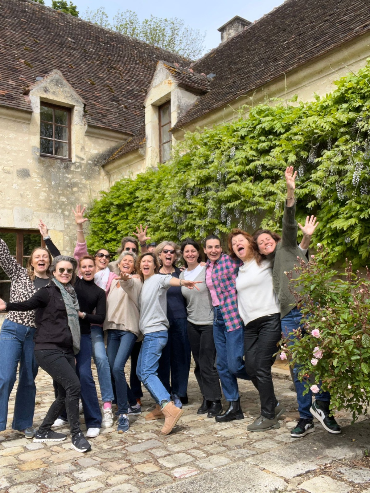
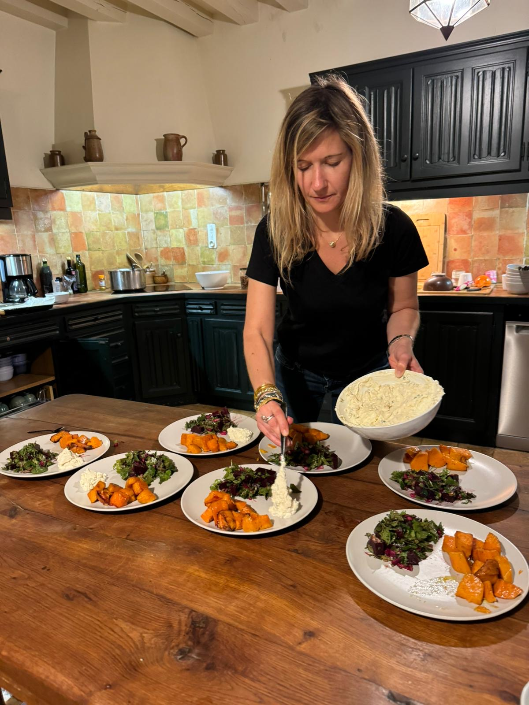
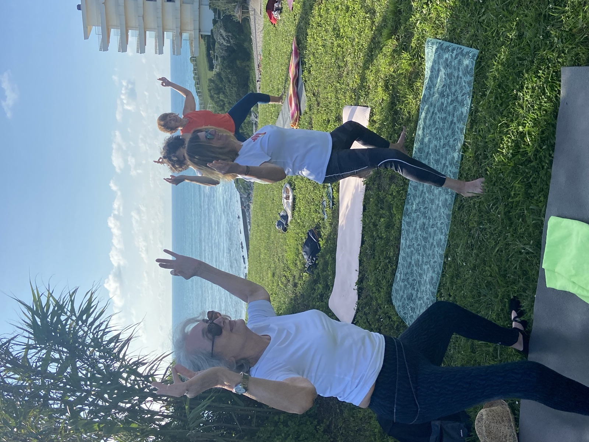
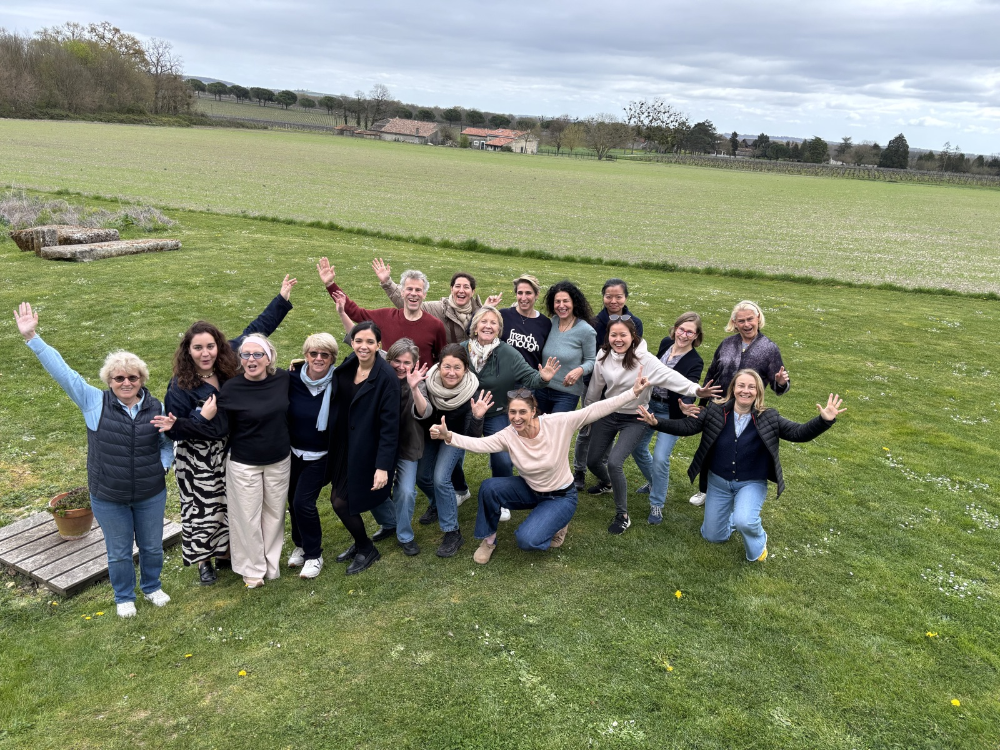
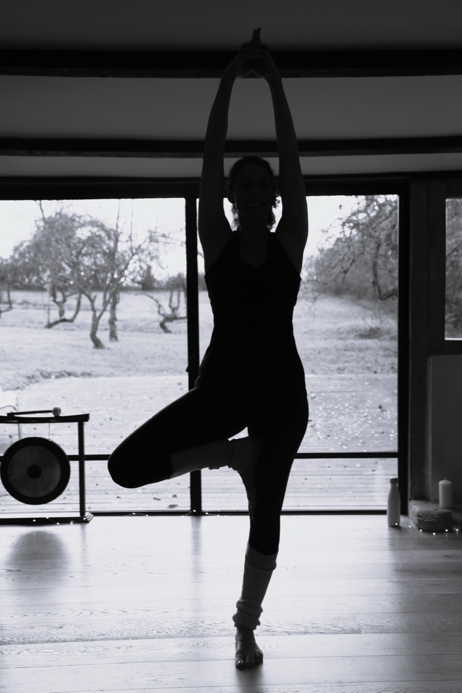

Perche · La maison fertile, Orne
Séjour détox et joie de vivre
· avec Isabelle
Trois jours pour poser ses intentions et s'alléger après les fêtes : danse, Pilates, Yoga et cuisine naturopathe.
Retraites Listen to you
Offrez-vous le luxe de vous écouter
Dans le Perche, à la maison fertile, et au Pays basque, au domaine d'Argia et à la maison Yaya. Danse et Pilates le matin, Yoga le soir. Une cuisine végétarienne et bio, et du temps pour soi.





L'esprit des retraites
Explorer le moment présent, pour plus de vérité et de ressenti
Depuis 2020
Isabelle propose des retraites Yoga-Pilates depuis 2020, avec des thèmes variés.
Professeure de Pilates, de Yoga et de Fitness, passionnée de mouvement et de santé holistique, elle met vingt ans d'expertise au service de ses participants. Elle se forme constamment ; aujourd'hui, c'est le système nerveux et le fonctionnement du corps humain qui retiennent son attention.
Un thème par retraite
Lors de chaque retraite, un thème spécifique est développé : la joie, la vitalité, le souffle, la régénération.
Ces moments nous invitent à observer notre monde intérieur pour mieux l'unir au monde extérieur. Le corps devient la porte d'entrée : c'est en étant au plus proche de nos sensations que nous apprenons à mieux nous connaître.
Bien entouré·e
Isabelle a à cœur de travailler avec des professionnels qualifiés et compétents.
Cuisinières naturopathes, masseuses réputées, accompagnateurs de randonnée : chaque retraite réunit des intervenants qui partagent la même attention au corps et au bien-être.
Les prochaines retraites
Un lieu, un thème, quelques jours pour soi
Perche · La maison fertile, Orne
· avec Isabelle
Trois jours pour poser ses intentions et s'alléger après les fêtes : danse, Pilates, Yoga et cuisine naturopathe.

Pays basque · Domaine d'Argia, près de Bayonne
· avec Isabelle et Elena de Noesis Culinaria
Cinq jours dans une maison du XVIIe siècle pour réguler le stress et retrouver son souffle : danse, Pilates, randonnées et Yoga.

Pays basque · Maison Yaya
· avec Isabelle
Une semaine pour ralentir et apaiser son système nerveux : danse, Pilates, respiration, Hatha et Yin Yoga.
Sur place
Entre pratique, bonne table et temps pour soi
Trente minutes de danse en musique pour se réveiller, puis des exercices de Pilates adaptés à tout le monde, avec le temps d'étudier les principes fondamentaux : respiration, ancrage, centre, fluidité.
Des repas végétariens, bios et locaux, préparés sur place. Pas de régime : le temps de déguster et de ressentir.
Promenades, visites, massages sur rendez-vous, ou simplement lecture et repos.
Hatha et Yin Yoga, auto-massages, yoga du visage et méditation pour ceux qui le souhaitent.
Rien à organiser : vous arrivez, on s'occupe du reste.
Voir les prochaines retraitesIls sont venus
Des retraites Listen depuis 2020
Questions fréquentes
La retraite dans le Perche coûte de 480 à 580 € par personne selon la chambre, pour deux nuits avec les repas et les pratiques. Au domaine d'Argia, comptez de 880 à 1 100 € par personne pour cinq jours. À la maison Yaya, de 1 450 à 1 800 € par personne pour la semaine.
Non. Les exercices sont adaptés à tout le monde, que vous débutiez ou que vous pratiquiez déjà.
Oui. Les tarifs sont par personne, en chambre partagée avec d'autres participants.
L'hébergement avec le linge, les repas végétariens et bios, les pratiques avec Isabelle et les promenades. Le trajet et les massages restent à votre charge.
Envoyez votre demande depuis la page de la retraite. Isabelle vous répond personnellement, puis un acompte de 30 % par virement confirme votre place. Les conditions d'annulation sont détaillées dans la charte de participation.
Une fiche « infos pratiques » détaillant l'accès vous est envoyée à la réservation. Le trajet n'est pas compris dans le prix.
Formation
100 heures en 7 modules, au studio Listen à Paris ou dans le Perche, pour les professeurs et les pratiquants passionnés.
Découvrir la formation